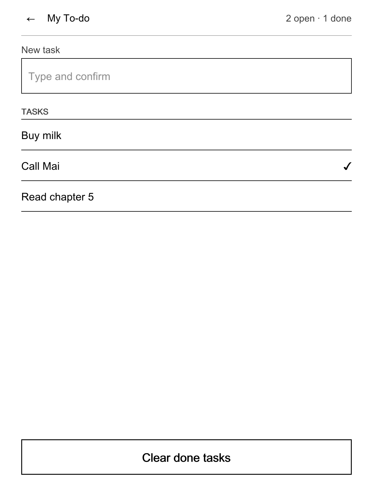

NickelDrawer developer guide
Build, test and ship an app for the drawer: a 15-minute tutorial, the reference, and the rules that keep a Kobo safe.
How to build, test and ship an app for the NickelDrawer app drawer on a Kobo. You need a computer with Go 1.24 or newer and a checkout of this repository. You do not need a Kobo until the last step, and you never write C++.
The formats are defined in docs/spec/. This guide is the friendly path through them; when the two disagree, the spec wins.
Status. The format, the validator, the previewer and the protocol are tested on a computer. Earlier builds of the drawer and its app screens ran on a Kobo; the current build has not been through its full device test session yet. Treat the previewer as a layout check, not as proof that a screen works on a device.
Build an app in 15 minutes
We build My To-do, a small version of the shipped To-do app (apps/todo): a text box to add a task, a list you tap to mark tasks done, a long-press menu to delete, and a button to clear done tasks. It is plain sh, no binary.

Rendered with ndpreview at the Kobo's screen size.
1. Scaffold
make build # host tools in build/
build/appsctl-host new mytodo --name "My To-do" --with-ui --dir /tmp/apps
appsctl new copies templates/app into /tmp/apps/mytodo/: app.json, ui.json, bin/run.sh, bin/state.sh, locales/en.json, locales/vi.json and a README. It refuses an existing folder and validates the result. Delete bin/run.sh; we write our own scripts.
2. Declare the actions: app.json
Every tap on the screen runs one action: a script named in app.json.
{
"schema": 1,
"id": "mytodo",
"name": "My To-do",
"version": "0.1.0",
"description": "A tiny to-do list kept in a text file",
"network": false,
"actions": [
{ "id": "newitem", "label": "New task", "run": "bin/newitem.sh", "output": "show", "timeout_ms": 3000 },
{ "id": "toggle", "label": "Mark done or open", "run": "bin/toggle.sh", "output": "show", "timeout_ms": 3000 },
{ "id": "remove", "label": "Delete task", "run": "bin/remove.sh", "output": "show", "timeout_ms": 3000, "confirm": "Delete this task?" },
{ "id": "clear-done", "label": "Clear done tasks", "run": "bin/clear-done.sh", "output": "show", "timeout_ms": 3000, "menu": true, "confirm": "Clear all done tasks?" },
{ "id": "state", "label": "State", "run": "bin/state.sh", "output": "show", "timeout_ms": 1000 }
]
}
- The
idequals the folder name and never changes after a release: the user's data lives under it. stateis special: the drawer runs it to fill the screen's variables.- An input control runs the action whose id equals its variable name. That is why the text box's variable and its action are both
newitem(action ids allow no_).
3. Describe the screen: ui.json
{
"kit": 1,
"start": "main",
"vars": { "open": "0", "done": "0", "hasdone": false, "newitem": "", "items": [] },
"screens": {
"main": {
"title": "@ui.title",
"status": "@ui.counts",
"body": [
{ "field": "@ui.new_task", "bind": "newitem", "placeholder": "@ui.new_task_hint", "keyboard": "text" },
{
"list": "$items",
"title": "@ui.tasks",
"empty_text": "@ui.empty",
"tap": "toggle",
"menu": [ { "id": "remove", "label": "@ui.delete", "confirm": true } ]
}
],
"footer": [
{
"button": "@ui.clear_done",
"action": "clear-done",
"enabled": "$hasdone",
"confirm": { "text": "@ui.clear_confirm", "ok": "@ui.clear_ok", "cancel": "@ui.cancel" }
}
],
"toasts": {
"added": "@ui.toast_added",
"removed": "@ui.toast_removed",
"cleared": "@ui.toast_cleared",
"empty": "@ui.toast_empty",
"failed": "@ui.toast_failed"
}
}
}
}
- Every variable a screen uses is declared in
varswith its default. "@ui.title"is a text fromlocales/<lang>.json.$itemsand$hasdoneare bindings filled fromstate.toastslists every short message a script may show. A script names one by id; it never prints the text itself.- A
failedtoast belongs on every screen: the helpers incommon.shuse it.
4. Write the texts: locales/
locales/en.json (English is the source):
{
"msg.added": "Task added.",
"msg.removed": "Task deleted.",
"msg.cleared": "Cleared {count} done tasks.",
"msg.empty": "Type the task first.",
"ui.title": "My To-do",
"ui.counts": "$open open · $done done",
"ui.new_task": "New task",
"ui.new_task_hint": "Type and confirm",
"ui.tasks": "Tasks",
"ui.empty": "Nothing to do yet",
"ui.delete": "Delete...",
"ui.clear_done": "Clear done tasks",
"ui.clear_confirm": "Delete every task that is marked done?",
"ui.clear_ok": "Delete",
"ui.cancel": "Cancel",
"ui.toast_added": "Task added",
"ui.toast_removed": "Task deleted",
"ui.toast_cleared": "Done tasks cleared",
"ui.toast_empty": "Type the task first",
"ui.toast_failed": "That did not work. See data/log.txt."
}
ui.* keys are screen texts. msg.* keys are what a script prints on the command line (tests, debugging). locales/vi.json has the same keys translated, plus name, description and actions.<id>.label for the manifest texts (see Languages).
5. Share the plumbing: bin/lib.sh
# Shared by the action scripts. Source it; do not execute.
# MYTODO_COMMON lets tests on a computer point at host/lib/common.sh.
APP_DIR=$(cd "$(dirname "$0")/.." && pwd)
. "${MYTODO_COMMON:-/mnt/onboard/.adds/koboapps/lib/common.sh}"
APP_ID=mytodo
DATA_DIR=$APP_DIR/data
TASKS=$DATA_DIR/tasks.txt # one task per line: "[ ] text" or "[x] text"
ensure_tasks_file() {
mkdir -p "$DATA_DIR" && touch "$TASKS"
}
# The text the screen sent (typed field or tapped row), on one line.
screen_text() {
printf '%s' "${NICKELDRAWER_VALUE:-}" | tr '\r\n\t' ' ' | sed 's/^ *//; s/ *$//'
}
# Writes stdin to a temp file next to the list, then renames it over the list:
# a power cut never leaves a half-written file.
replace_tasks() {
cat >"$TASKS.tmp" && mv "$TASKS.tmp" "$TASKS" || {
rm -f "$TASKS.tmp"
fail_with "$APP_DIR" "could not rewrite $TASKS"
}
}
The drawer starts scripts from / as root with only PATH, HOME=/ and NICKELDRAWER=1 set, so find your folder from $0 and source common.sh by its absolute path. An overridable path (here MYTODO_COMMON) lets you run the same scripts on a computer.
6. Report the screen state: bin/state.sh
#!/bin/sh
# Prints the ui.json variables as one JSON object. Must be fast: it runs every 5 s.
. "$(dirname "$0")/lib.sh"
ensure_tasks_file || exit 1
awk '
function json(text) { gsub(/\\/, "\\\\", text); gsub(/"/, "\\\"", text); return "\"" text "\"" }
/^\[ \] / { open++; rows = rows sep "[" json(substr($0, 5)) ",\"\"]"; sep = "," }
/^\[x\] / { done++; rows = rows sep "[" json(substr($0, 5)) ",\"✓\"]"; sep = "," }
END {
printf "{\"open\":\"%d\",\"done\":\"%d\",\"hasdone\":%s,\"newitem\":\"\",\"items\":[%s]}\n",
open, done, (done > 0 ? "true" : "false"), rows
}' "$TASKS"
The drawer runs state when the screen opens and every 5 seconds while it is open, with a 1-second budget. Print one JSON object whose keys are your vars. A list row is a string or [primary, secondary]. If state fails, the drawer keeps showing the previous values.
7. Answer the taps: the action scripts
bin/newitem.sh, run when the user confirms the text box:
#!/bin/sh
# The "New task" field: adds the typed text as an open task.
. "$(dirname "$0")/lib.sh"
ensure_tasks_file || fail_with "$APP_DIR" "cannot create $TASKS"
task=$(screen_text)
[ -n "$task" ] || report_failure empty "$APP_ID" msg.empty
{ cat "$TASKS"; echo "[ ] $task"; } | replace_tasks
report added "$APP_ID" msg.added
bin/toggle.sh, run when a row is tapped (the row's text arrives in NICKELDRAWER_VALUE):
#!/bin/sh
# Tap on a row: open becomes done, done becomes open. The row change is the feedback.
. "$(dirname "$0")/lib.sh"
ensure_tasks_file || fail_with "$APP_DIR" "cannot create $TASKS"
awk -v task="$(screen_text)" '
!changed && $0 == "[ ] " task { print "[x] " task; changed = 1; next }
!changed && $0 == "[x] " task { print "[ ] " task; changed = 1; next }
{ print }' "$TASKS" | replace_tasks
bin/remove.sh (row menu Delete...) and bin/clear-done.sh follow the same shape:
#!/bin/sh
# Removes every done task. The button's confirm dialog already asked.
. "$(dirname "$0")/lib.sh"
ensure_tasks_file || fail_with "$APP_DIR" "cannot create $TASKS"
count=$(grep -c '^\[x\] ' "$TASKS")
grep -v '^\[x\] ' "$TASKS" | replace_tasks
report cleared "$APP_ID" msg.cleared count="$count"
report <toast> <app> <msg-key> prints {"toast":"added"} inside the drawer and the localized msg.added text on the command line. report_failure does the same and ends the script. fail_with logs the reason to data/log.txt and shows the failed toast. Make every script executable: chmod +x bin/*.sh.
8. Run the scripts on your computer
export MYTODO_COMMON=$PWD/host/lib/common.sh NICKELDRAWER=1
NICKELDRAWER_VALUE='Buy milk' /tmp/apps/mytodo/bin/newitem.sh # {"toast":"added"}
NICKELDRAWER_VALUE='Buy milk' /tmp/apps/mytodo/bin/toggle.sh
/tmp/apps/mytodo/bin/state.sh # {"open":"0","done":"1","hasdone":true,...}
NICKELDRAWER_VALUE='' /tmp/apps/mytodo/bin/newitem.sh # {"toast":"empty"}
Without NICKELDRAWER=1 the same scripts print the localized sentences instead (they call appsctl msg, which needs the Kobo path or an override).
9. Preview the screen
build/ndpreview-host serve /tmp/apps/mytodo --locale vi
Open http://127.0.0.1:8790/. The page draws the screen at the Libra 2 size (1264 × 1680) in black, white and greys. The sidebar switches screen and language, edits the variables (try a list of 60 tasks and long Vietnamese texts), and shows the JSON line a tap would send and which action would run. Arrow keys stand in for the page-turn buttons; "←" pops a screen. Edit, save, reload.
A picture for a review or bug report:
build/ndpreview-host render /tmp/apps/mytodo --out mytodo.png --locale vi --state state.json
render needs a TrueType font with Vietnamese letters; without --font it tries common system fonts and otherwise draws shapes only (with a warning).
10. Validate
build/appsctl-host validate /tmp/apps/mytodo
# ok mytodo (5 actions, ui.json)
Each problem prints as path: [code] message. The codes are listed in ui-json.md §7. Fix every error and warning before you go on.
11. Install on a Kobo
Kobo safety. Back up
.adds/appsfirst. Never leave your shell's working directory on the Kobo volume (it blocks ejecting); use absolute paths. Do not ship or copy adata/folder.
cp -R /tmp/apps/mytodo /Volumes/KOBOeReader/.adds/apps/mytodo
rm -rf /Volumes/KOBOeReader/.adds/apps/mytodo/data
Eject, open More → Apps, tap the refresh button in the header. Tap My To-do. If a tap does nothing visible, read .adds/apps/mytodo/data/log.txt and, with the debug switch on, .adds/nickeldrawer/debug.log.
That is a complete app. The shipped To-do does the same job with a small Go helper (cmd/todo) that stores tasks as JSON, cleans the text to Unicode NFC, refuses duplicates, caps the list at 200 tasks and recovers from a damaged file.
The mental model
tap on the Kobo ──► libnickeldrawer.so (inside Nickel, draws only)
│ runs as a child process, reads one JSON reply
▼
appsctl drawer screen | event | run
│ runs your script with NICKELDRAWER=1
▼
bin/<action>.sh ──► {"toast":"added"} (+ optional requests)
bin/state.sh ──► {"open":"2", ...} (re-read every 5 s)
Three rules:
- Scripts are short. Each tap runs one script. It does a quick job, or starts a detached background job, and returns at once. Inside the drawer a script is stopped when its
timeout_msruns out (5 s when you declare none, never more than 30 s) and the user sees a timeout message; aim for well under a second. - State is re-read. The screen's values come only from
state. A background job shows progress by writing files thatstatereads. There is no long-running app process inside or next to Nickel. - Signals are declared. A script answers with JSON signals naming things the screen declared:
{"toast":"id"},{"dialog":"id"}, and requests the manifest allows:{"request":"rescan"},{"request":"wifi"}. Anything else on stdout is logged and dropped.
The API-only rule, and why
Inside the drawer an app never shows its own text: no prose dialogs, no log dumps, no NickelMenu output. It talks to the host only through the protocol above, and the host maps signals to Nickel's own widgets (toasts, confirm dialogs, menus, the keyboard, Wi-Fi connect, library rescan).
Why:
- Nickel stays safe. The less code runs inside Nickel, the fewer ways to crash the reader. All logic lives in
appsctland your scripts, outside Nickel. - It looks like a Kobo. Every app gets the same fonts, sizes, dialogs and e-ink refresh behaviour.
- Every language works. Texts live in locale files, so a translator never touches code.
- It is testable. The whole path from tap to reply runs on a computer.
Rule of thumb: if you are about to echo a sentence, declare it as a toast instead.
app.json reference
Full rules: app-format.md.
| Field | Rule |
|---|---|
schema |
Always 1. |
id |
Lowercase letters, digits and -, 2 to 31 characters. Equals the folder name. Never changes. |
name |
1 to 24 characters, no :. English; translations in locales/. |
version |
Semver MAJOR.MINOR.PATCH. |
description |
Optional, up to 120 characters. Shown in Info. |
storage |
Optional {"reads": [...], "writes": [...]} of logical folders (see Storage). |
network |
true if the app uses the network. Shown in Info. |
requests |
Host services scripts may ask for: rescan, wifi. |
min_host |
Optional oldest NickelDrawer version the app needs. |
hidden |
Optional. true keeps the app out of the drawer list (it still validates and runs by id). Users can show it from ⚙ → Hidden apps. |
actions |
1 to 12 actions. |
actions[].id |
Lowercase letters, digits and -. state and status are special (below). |
actions[].label |
1 to 32 characters, no :. |
actions[].run |
Path inside the app folder, executable. |
actions[].output |
show: run and wait, only JSON signals reach the screen. none: start detached and return at once. |
actions[].timeout_ms |
With show: 500 to 9999, default 5000. The drawer stops the script when it runs out and shows a timeout message. |
actions[].menu |
true puts the action in the drawer's long-press menu. Default false: an action stays on the screen only. |
actions[].confirm |
A question (up to 120 characters, no :; translate it as actions.<id>.confirm). The drawer asks it in a Nickel dialog before it runs the action from a tap or the long-press menu. Set it on every destructive action. |
actions[].wifi |
true: the drawer makes sure Wi-Fi is connected first (it asks the user, connects and retries once). |
actions[].rescan |
none, quick or full: the host rescans the library after the action, only when it exits 0. |
Special actions:
| Action id | Used for |
|---|---|
state |
Fills the screen's vars. Runs on open and every 5 s, 1 s budget. |
status |
Optional. The status line under the app's name in the drawer list. First line plain text, or {"running":true,"line":"…"}. 1 s budget, cached 30 s. |
| the first action | The primary action. It runs on a tap only when the app has no ui.json or the user set the no-screens switch. |
Scripts get these environment variables:
| Variable | When |
|---|---|
NICKELDRAWER=1 |
Always inside the drawer. Return at once and print only JSON signals. |
NICKELDRAWER_VALUE |
The control's value: toggle true/false, radio option id, field text, list row's primary text, gallery/viewer picture id. |
NICKELDRAWER_LIST, NICKELDRAWER_INDEX |
A list row menu: the list's variable and the zero-based row. |
ui.json components
Full rules: ui-json.md. Looks and sizes: ui-kit.md. To see every component on a device, the hidden UI Kit app (apps/uikit) shows them all with sample content; tap the gear (⚙) in the drawer header and turn on UI Kit under Hidden apps (the choice is kept in the host's data/settings.json; the app's app.json stays hidden: true).
A screen has a header (back arrow, title, status, and one action text link or up to two icon actions), a body that pages, a footer that stays at the bottom, and declared dialogs and toasts. Texts are plain strings, "@ui.key" references, or {"en": …, "vi": …} maps.
| Component | Example | Notes |
|---|---|---|
text |
{ "text": "Copy books here over USB.", "style": "caption" } |
style: body, caption, heading. Hidden when it resolves to empty. |
section |
{ "section": "Network" } |
Small-caps group label. |
kv |
{ "kv": [["IP", "$ip"], ["PIN", "$pin"]] } |
1 to 12 key/value rows. |
row |
{ "row": "Pair with your phone", "detail": "Not paired", "action": "pair" } |
Tappable with an action (optional confirm) or a push to another screen; show hides it while a flag is false. A detail too long for the right-hand column goes under the label. |
toggle |
{ "toggle": "Use Wi-Fi", "bind": "wifi" } |
Runs the action named like the variable with true/false. |
radio |
{ "radio": "How it shows", "bind": "mode", "options": [["fill", "Fill the screen", "Edges are cropped"], ["fit", "Fit inside"]] } |
1 to 8 options, optional sub-line. Sends the option id. |
field |
{ "field": "New task", "bind": "newitem", "placeholder": "Type and confirm", "keyboard": "text" } |
Opens Nickel's keyboard (text, number, url). Not for secrets: use pair. |
bigcode |
{ "bigcode": "$pin", "digits": 4 } |
Large digits, 3 to 12. |
qr |
{ "qr": "$url", "caption": "Scan with your phone" } |
QR code of a short value. |
pair |
{ "pair": { "url": "$url", "code": "$code", "title": "Open on your phone", "hint": "Use only on your own Wi-Fi.", "expires": "$expires" } } |
The phone-pairing block: QR, address, code. |
steps |
{ "steps": { "label": "Downloading", "done": "$done", "total": "$total", "detail": "$file" } } |
Progress of a background job, as text (never a notice). Hidden while label is empty; with done and total empty the headline is the label alone. |
samples |
{ "samples": [{ "button": "Stop", "look": "pressed", "caption": "Pressed" }], "columns": 3 } |
A picture of controls in their states (UI Kit): look is normal, pressed, selected or disabled; no bindings, no events, never the primary. |
notice |
{ "notice": "$notice", "title": "Last sync failed" } |
Boxed note. Hidden when the text is empty: bind it to show it conditionally. |
button |
{ "button": "Stop", "action": "stop", "style": "secondary", "enabled": "$running", "confirm": { "text": "Stop now?", "ok": "Stop", "cancel": "Cancel" } } |
An action or a push (one of them). At most one primary visible per screen: when the main action depends on the state, give each primary a show flag ("$running", "!$running") instead of disabling one (a disabled primary next to the possible action is a warning). enabled and show take $var or !$var. |
list |
{ "list": "$received", "title": "Received", "empty_text": "Nothing yet", "max": 10, "tap": "open-item", "menu": [{ "id": "delete-item", "label": "Delete...", "confirm": true }] } |
Rows from an array; tap and long-press menu (up to 6 entries). |
empty |
{ "empty": "No pictures yet", "text": "Copy PNG or JPEG pictures to Pictures.", "button": "Import pictures", "action": "import" } |
Empty state; its button counts as the primary. |
gallery |
{ "gallery": "$pictures", "columns": 4, "rows": 3, "on_tap": { "push": "viewer" }, "on_long_press": [{ "label": "Info", "info": true }] } |
Picture grid. Items come from state: {id, thumb, image, label, info, badge}; paths must be absolute .png below your data/. |
viewer |
{ "viewer": "$pictures", "selected": "selected", "primary": { "label": "Set as wallpaper", "label_current": "In use", "action": "set-current" } } |
One picture at a time. Must be alone on its screen, no footer. |
Content style the validator warns about (it never stops an app loading): text typed in capitals (the renderer uppercases section labels), a header status wider than 340 px, a one-line caption with a full stop, and a section over a single paragraph. Dates and times come from the locale's format.date, format.datetime and format.time, never from a fixed layout.
Two details the validator enforces: a list menu's confirm may be true, but a gallery on_long_press or viewer secondary confirm must be an object ({"title", "text", "ok", "cancel"}); and every variable you bind must be declared in vars.
Dialogs and toasts are per screen:
"dialogs": { "done": { "title": "Synced", "text": "$summary", "ok": "OK" } },
"toasts": { "saved": "Saved", "failed": "That did not work. See data/log.txt." }
A script shows them with {"dialog":"done"} or {"toast":"saved"}. On a dialog's OK the host runs its action, if it has one.
Navigation and the back stack
Your screens and their push links are the flow. There is one back stack, like Nickel's own pages:
More → Apps drawer → main → sub-screen → detail
- "←" goes back exactly one level and restores the previous screen at the page it was on, with fresh data. Never draw your own back button.
- At most two levels below
main. Deeper means the design needs a popup menu or fewer screens. - No cycles. A screen never pushes its own parent.
- A bottom-tab tap clears the stack. Keep anything important in
data/and return it fromstate; screen state does not survive. - Leaving a screen never cancels work. Background jobs keep running.
- No stacked modals: no dialog on a popup, at most one dialog at a time. After an action, stay on the screen; do not push a result screen.
appsctl validate checks the flow: main exists, every screen is reachable from it, depth at most 2, no cycles, no push to a missing screen.
| Need | Use |
|---|---|
| A place the user stays | A screen |
| Options or details of one thing | A sub-screen opened with push |
| One of several actions on an item | A long-press menu |
| A destructive confirmation or one result | A dialog |
| "It finished" | A toast |
Languages (i18n)
- English is the source:
app.jsontexts pluslocales/en.json. Shiplocales/vi.jsontoo; other languages are welcome. - The drawer picks the language from the Kobo's
CurrentLocale:pt_BR.json, thenpt.json, then English, key by key. - Keys:
name,description,actions.<id>.label,ui.*(screen texts),msg.*(script texts). - Placeholders:
{count}inmsg.*,$varbindings inui.*. A translation must keep the same placeholders;validatechecks it. - Never build a sentence from pieces. One string with placeholders per message.
- Keep texts short: e-ink, small screen, and Vietnamese runs 20 to 40 % longer than English. No
:in labels (menus use it as a separator). - Scripts never print literal text. On the command line they print
appsctl msg --app <id> msg.<key> name=value; in the drawer they print a toast id. - Check a language without a Kobo:
build/ndpreview-host serve <app> --locale vi, orappsctl msg --locale vi --app <id> msg.<key>.
How to add a language for users: user-guide.en.md, Languages and TRANSLATING.md.
Storage and safe paths
Apps run as root on the device that holds the user's library. Nothing is sandboxed, so the manifest is the contract that reviews and validate hold your code to.
| Logical name | Folder |
|---|---|
your data/ |
/mnt/onboard/.adds/apps/<id>/data (no declaration needed) |
books |
/mnt/onboard/Books |
documents |
/mnt/onboard/Documents |
comics |
/mnt/onboard/Comics |
pictures |
/mnt/onboard/Pictures |
inbox, rejected |
/mnt/onboard/.adds/koboapps/inbox and its rejected/ |
screensaver |
/mnt/onboard/.kobo/screensaver (Wallpaper only) |
Rules:
- Touch only your
data/and the folders you declare. Put files you create in shared folders in a sub-folder or with a prefix that shows they are yours (Books/GitHub/,nd-wallpaper-*). - Never delete or overwrite user files. Delete only what your app made. Move to
data/trash/when unsure. - Write atomically: a temp file in the same folder, then
mvover the target. - Hold no file open on
/mnt/onboardafter a script exits: it blocks USB. Keep running logs in/tmpand copy them todata/at the end. - Validate every path from config or the network: no
.., no absolute paths from outside. - Secrets live in
data/with mode 600 and never appear in output, logs orstate./mnt/onboardis FAT, so mode 600 is not enforced there: anyone with USB access can read the file. Ask users for the narrowest token possible, and get long or secret input from a phone with the pairing pattern (ghsync-pairing.md), never from the Kobo keyboard. - Never edit
KoboReader.sqlite. Ask for a rescan instead. - Never ship Kobo binaries or firmware files.
Requests: rescan and Wi-Fi
A script can ask the host for a Nickel service it cannot reach. Declare it in app.json:
"requests": ["rescan", "wifi"]
Then print the request, alone or with a toast:
emit_request rescan quick # {"request":"rescan","mode":"quick"}
emit_request wifi # {"request":"wifi"}
| Request | Host does |
|---|---|
{"request":"rescan","mode":"quick"} |
Nickel's quick library rescan (mode omitted = quick). |
{"request":"rescan","mode":"full"} |
Full rescan. |
{"request":"wifi"} |
Nickel's Wi-Fi connect flow. |
The host does Wi-Fi first, then one rescan. A request the manifest does not list is dropped and logged. For "rescan when the action succeeded", the action's rescan field is simpler.
Background jobs
Anything that may take more than a second runs in the background. The pattern (see apps/library/bin/lib.sh):
- The action checks a pid file; if a job runs, it answers
{"toast":"busy"}. - Otherwise it starts the job detached with every file descriptor redirected (
start_detachedincommon.sh, orsh -c '…' </dev/null >/tmp/out 2>&1 &), writes the pid to/tmp/<app>.pid, and answers{"toast":"started"}at once. - The job writes its progress (
done,total, current file) to a small file and its result todata/. statereads those files and fills astepscomponent and a summary. The screen updates every 5 seconds.- When the job changed the library, it leaves a marker. The next
statethat sees the job has ended prints"requests":[{"request":"rescan","mode":"quick"}]and deletes the marker, so the request is handed over exactly once.
Rules for jobs:
- The Kobo may sleep or drop Wi-Fi at any time; no script can keep it awake. Check the connection inside long jobs, end with a clear error, and stop yourself after a time limit.
- No polling loops or busy waits. Do the work, then exit. Skip work that is already done.
- Make jobs restartable: a half-finished download is a temp file that the next run cleans up.
Testing
| Level | Command | What it covers |
|---|---|---|
| Format | build/appsctl-host validate <app> |
Manifest, locales, ui.json, navigation graph. |
| Shell | sh -n bin/*.sh and shellcheck -x bin/*.sh |
Syntax and common shell mistakes. |
| Scripts | Run them with NICKELDRAWER=1 and path overrides (step 8 above) |
Exit codes, signals, files written atomically. |
| Protocol | appsctl drawer screen <app> --apps-dir <dir>; Go tests in cmd/appsctl/examples_test.go |
The exact JSON the mod receives. The Go test runs the real protocol with ScriptEnv overrides; copy it for your app. |
| Golden replies | go test ./cmd/appsctl -run Golden (-update rewrites, then review the diff) |
Screen replies with bindings and locales resolved, in cmd/appsctl/testdata/drawer/. |
| Whole repo | make check |
gofmt, go vet, go test ./..., shellcheck if installed. |
| Install | tools/test-install.sh |
The installer against a fake Kobo in a temp folder, including --uninstall. |
| Preview | build/ndpreview-host render … |
A picture of each screen and language for review. |
| Device | the device checklist below | What a computer cannot show. |
Device checklist (with the device owner present and backups made):
- The refresh button in the header makes the app show; its icon and name fit.
- Each tap answers within a second or two with a toast or a visible change.
- Texts fit in English and Vietnamese (switch the Kobo's language).
- Failure paths (no Wi-Fi, empty input, missing file) end in the
failedtoast, never a freeze. - USB connects right after using the app (nothing held open).
- New files appear in the library after the rescan.
- Let the Kobo sleep during a background job and check that it ends cleanly.
Icons
Icons come from Nickel's own resources first, then Tabler Icons (MIT). Never draw your own: hand-drawn icons look wrong next to Nickel's.
- An app icon is
icon.pngnext toapp.json: 96 × 96 px, black outline strokes on a transparent background. The drawer scales it (52 px in a list row). SVG is not supported on the device. - In this repository, icons are rendered from the vendored Tabler SVGs so the stroke weight matches Nickel: add the SVG to
third_party/tabler-icons/svg/, add a row tocmd/iconsgen/icons.go, and rungo run ./cmd/iconsgen -repo .. A test fails when a committed PNG is stale. - Header icon buttons (
actions) use the namesimport,settings,refresh,add; the host provides those icons. - No icon file: the drawer shows a generic apps icon.
Publishing an app
- Bump
version(see below) and run every check in Testing. -
Package the folder so the folder itself is at the top level, without
data/:zip -r mytodo-0.1.0.zip mytodo -x 'mytodo/data/*'If you need a default config, ship
config.example.jsonnext toapp.json(not indata/) and let the user copy it, as GitHub sync does. -
Write a README: what the app does, which folders it reads and writes, whether it uses the network, and how to remove it.
- Users install by copying the folder to
.adds/apps/and tapping the refresh button in the header.
Signed over-the-air updates cover only the apps inside an official NickelDrawer release; a separate app is updated by copying the new folder over the old one (its data/ stays). Never include Kobo binaries or firmware files.
To propose an app for the main repository, follow CONTRIBUTING.md. Code in this repository is under PolyForm Noncommercial 1.0.0.
Versioning and min_host
- PATCH for fixes, MINOR for new actions, screens or messages, MAJOR when the
data/format changes incompatibly. On a MAJOR change, migrate old data or refuse with a clear message. - Bump
versionon every release; Info shows it. - If your app needs a newer NickelDrawer feature, set
"min_host": "1.2.0". On an older host the drawer row reads "Needs a newer version" instead of the app's status. The app still runs, so fail gracefully. - The protocol is versioned (
"v": 1). New fields are additive within v1.
Common mistakes
| Mistake | Fix |
|---|---|
| A script prints a sentence for the user. | Declare a toast in ui.json and print {"toast":"id"} (report). Prose is dropped. |
| A toast id the screen did not declare. | Add it to that screen's toasts. Undeclared ids are dropped silently. |
| A slow script (a download, a scan) in the foreground. | Background job pattern. The drawer gives up after 30 s and the screen waits the whole time. |
state that does real work. |
state only reads small files. It runs every 5 seconds with a 1-second budget. |
| A control does nothing when tapped. | An input control runs the action whose id equals its bind variable. No such action means read-only. |
A variable used but not in vars. |
Declare it with a default. validate reports ui.unknown_var. |
| Two primary buttons. | One primary per screen, counting empty, gallery empty and viewer buttons. |
: in a label. |
Reword. Menus use : as a separator. |
Writing outside data/ and declared folders, or overwriting user files. |
Declare the folder, use your own sub-folder or prefix, never overwrite. |
A file left open on /mnt/onboard, or a background job without redirected fds. |
Log to /tmp; use start_detached. Otherwise USB connect hangs. |
| A token typed on the Kobo or printed in a log. | Pairing page on the phone; secrets only in data/, never printed. |
| A hand-drawn icon. | A Tabler icon rendered with iconsgen. |
| Testing first on the device. | Validate, run the scripts and preview on the computer first. |
Known gaps in this beta
Places where nothing has run on a device yet, or where the Kobo side differs from the preview. Design around them.
| Gap | What to do |
|---|---|
The current app screens, gallery and viewer have run on a Kobo only in earlier builds, and the field keyboard never. |
Treat ndpreview as a layout check only. Expect real fonts to be wider: long screens page earlier on the device. |
| The mod's own texts (the More rows, a few errors) exist in English and Vietnamese only. | Nothing for app authors; your app's texts follow its locale files. |
Further reading
- docs/APPS.md: the original app guide with more design rules.
- spec/app-format.md, spec/ui-json.md, spec/ui-kit.md, spec/drawer-protocol.md.
- apps/todo, apps/uikit, apps/library (background jobs), apps/ghsync (phone pairing), examples/imageview.
- mod/drawer/README.md: how the Kobo side draws your screens and how it degrades.